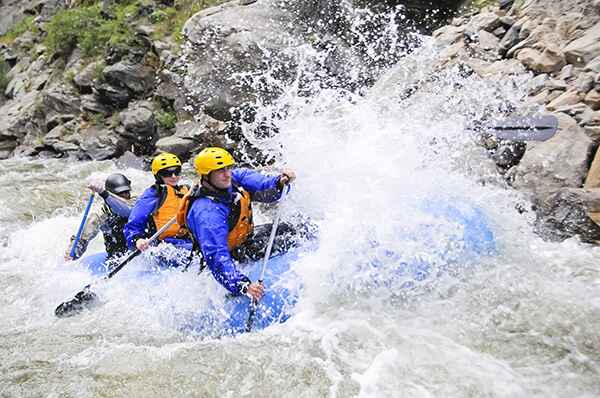
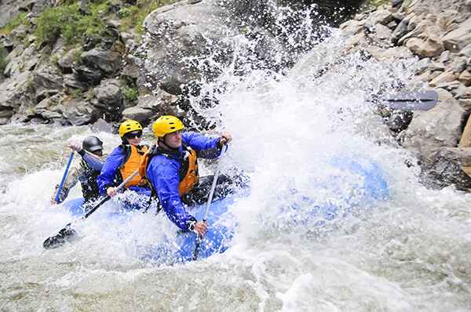

Join us on the most thrilling river adventures with safety, excitement, and unforgettable memories guaranteed.

White Water Rafting
Our Mission
At White Water Rafting, our mission is to connect people with nature through exhilarating and safe rafting experiences. Whether you're a beginner or a seasoned rafter, we provide unforgettable river adventures led by experienced guides.
Meet the Team
Our certified rafting guides and support crew are passionate about the outdoors and dedicated to your safety. With years of experience and local river knowledge, our team ensures your adventure is fun, educational, and memorable.
History
Founded in 2010, White Water Rafting has grown from a local passion to a nationally recognized outdoor adventure company. Our commitment to safety and nature keeps guests coming back year after year.


 
